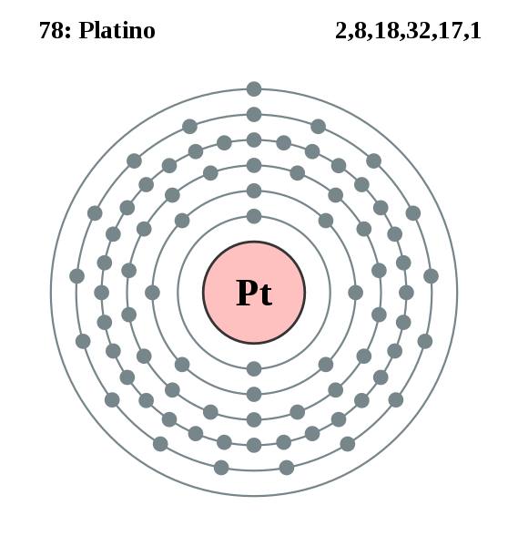

|
|
||
|
PLATINO Aunque no se descubrió oficialmente hasta 1735, los americanos nativos precolombinos ya usaban el platino. Se produce en la naturaleza con otros metales de su grupo en la tabla periódica, es de color blanco plateado, maleable y dúctil, y no se oxida en el aire. Por contra, el platino se corroe con halógenos, cianuros, azufre y alcalinos cáusticos. Se usa mayoritariamente en joyería, cableado y recipientes de laboratorio, así como con electrodos sellados, elementos de termopares, contactos eléctricos y aparatos resistentes a la corrosión. |
 |
DATOS Número Atómico: 78 Peso Atómico: 195.1 Electronegatividad: 2,28 Configuración Electrónica: [Xe]4f145d96s1 Estados de Oxidación: +4,2 No. de Electrones de Valencia: 2 |